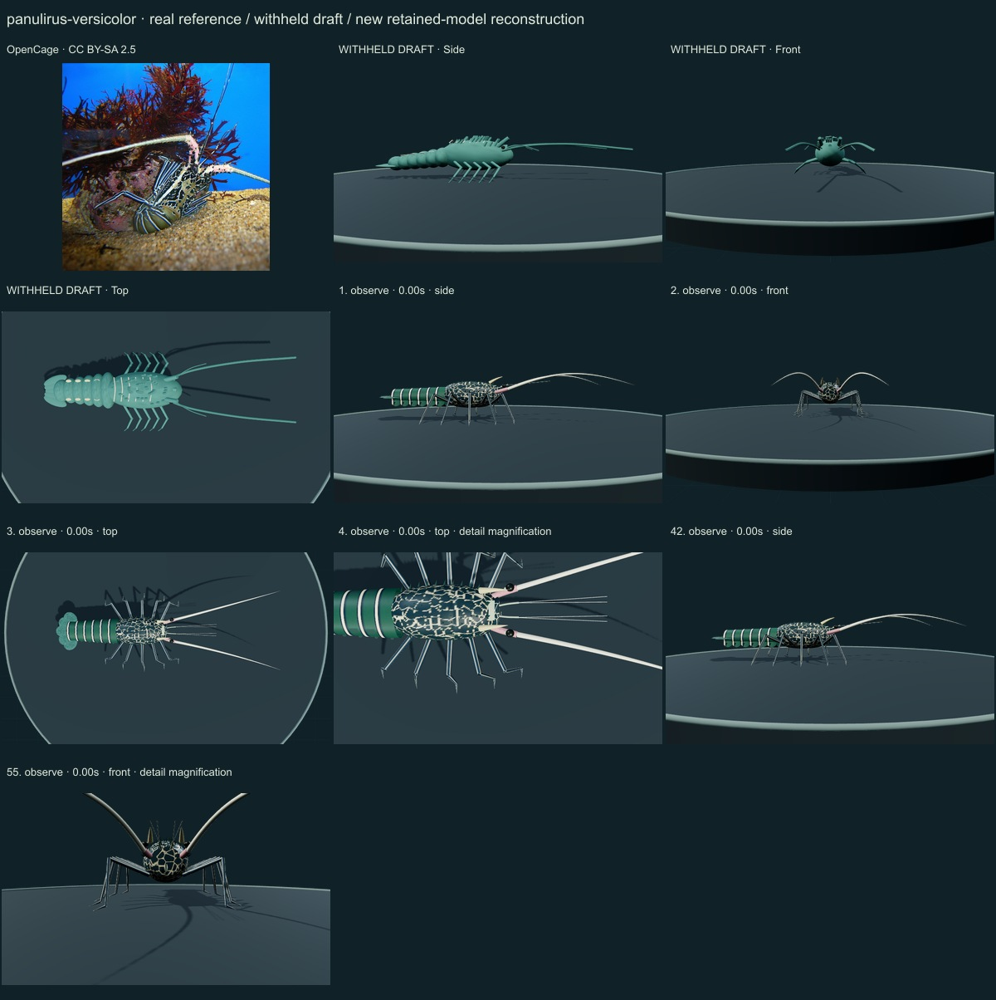
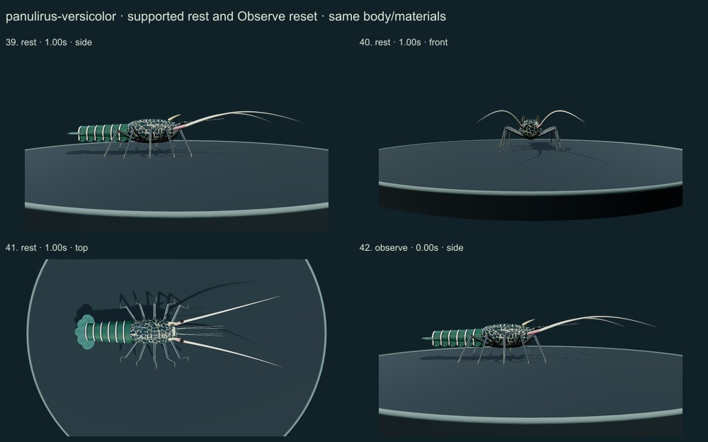
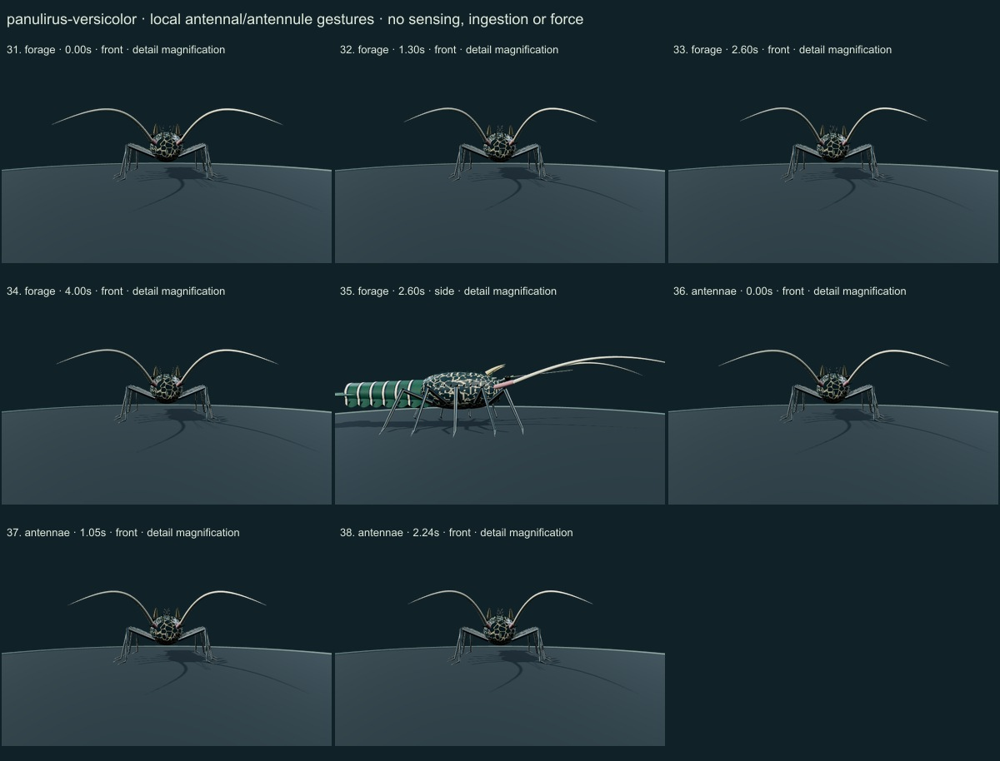
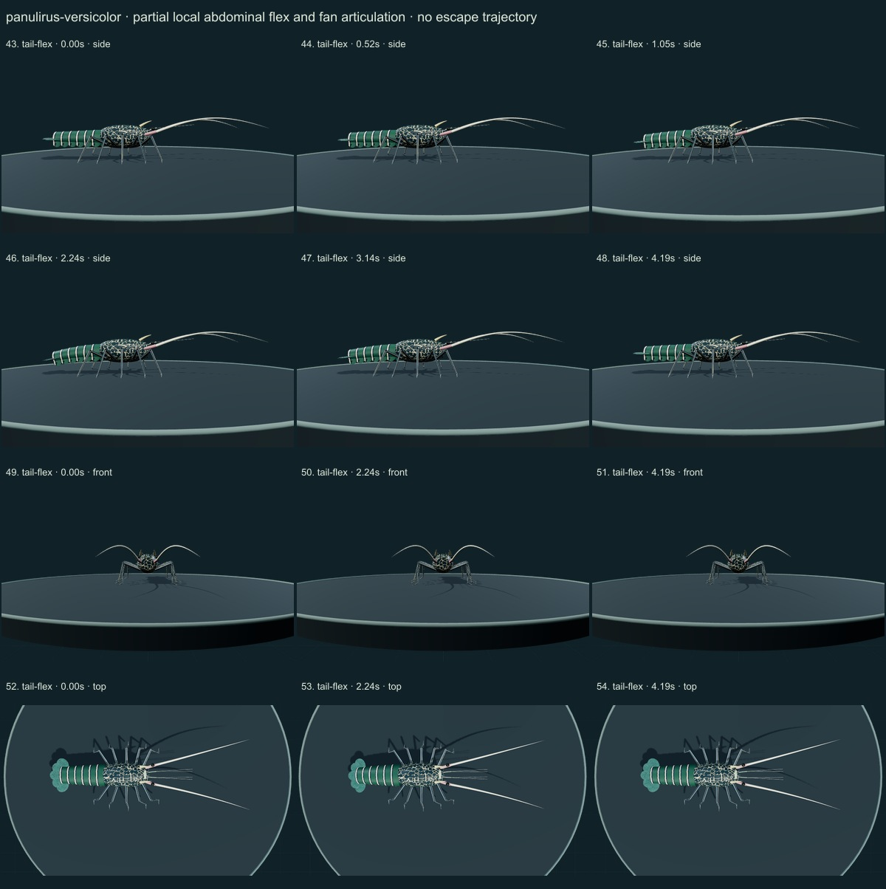
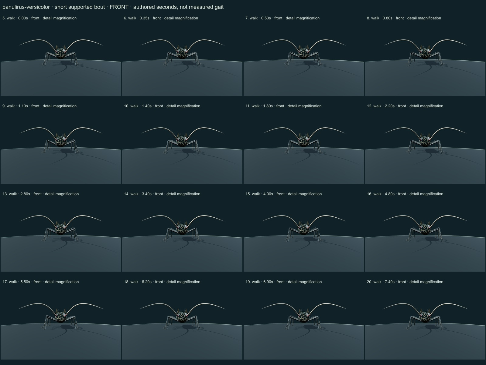
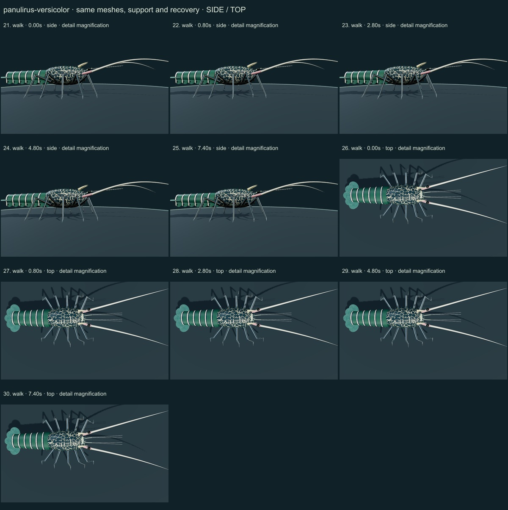

PhenoVoxel Archive · v0.6.21 · October 25, 2026
Painted spiny lobster
This release reaches 267 records after verified publication. 33 saved drafts remain held; 283 remain to 550, including 250 without saved drafts. Release register.
The authentic OpenCage CC BY-SA2.5 photograph and selected actual Naturalis/FAO and Smithsonian SERC account diagnoses were compared. Actual FAO1998 PDFpage48 printed1013 Fig20f and page56 printed1021 species illustration/diagnosis were rendered/viewed. Smithsonian account morphology is distinguished from a collection determination; the photograph comes from OpenCage, not SERC. Shallow pubescent areas are distinguished from transverse grooves, and adult/juvenile color descriptions are scoped.
OpenCage · CC BY-SA 2.5. Authentic OpenCage source photograph, CC BY-SA2.5, viewed. Selected blue-green/pale phenotype and lighting do not establish sex, measurements, material optics or all species variation. Resized inside 1000 px, flattened and JPEG encoded; no generative alteration.
Exact creator, license, download/local checksums and access scopes remain in the data. Real photographs are not generated media. Primary figures are linked, not redistributed.
A separately proportioned spiny carapace, four separated principal antennular-plate spines, longer antennules, strong tapered second antennae, smooth six-somite banded abdomen with shallow selected pubescent-area cues on somites2/3, five-part fan and ten articulated non-chelate limbs replace the generic draft.
An original irregular blue-green and pale cuticle mosaic, pale abdominal bands with dark margins, longitudinal pale/dark leg stripes, selected pink basal antennae with pale flagella, and original fan-ray cues follow the retained OpenCage photograph and scoped FAO descriptions.
Remaining: Exact body ratios, principal/secondary spine positions, pubescent fields and setae, fan/pleopod membranes, antennal articulation and mouthparts remain approximate. Original pigment and roughness are not measured cuticle optics or a scan. Source-photo stage/sex are not independently redetermined. Female P5 chelation, internal anatomy, true sensory processing, stridulation, food handling/ingestion and hydrodynamic escape are absent. The model remains partly stylized, with authored unmeasured support and partial tail articulation rather than validated biological biomechanics.
The same retained surfaces perform a short supported forward bout, antenna/antennule articulation, partial search gesture, quiet support and mild serial tail/fan flex. No great Homarus claws, measured locomotor sequence, escape displacement, food interaction, stridulation or physiological sensing is claimed.
Original qualitative educational reconstruction; proportions, cuticle optics, natural timing, joint limits, forces, feeding, sensing and physiology remain unmeasured. No independent specialist validation or accuracy percentage. Software support checks are not empirical biological validation.
55 actual final nonblank viewer states inspected individually on six labelled sheets; neutral full-organism and enlarged diagnostic views distinguished. Qualitative author assessment, not independent scientist certification.






Original qualitative educational reconstruction; proportions, cuticle optics, natural timing, joint limits, forces, feeding, sensing and physiology remain unmeasured. No independent specialist validation or accuracy percentage. Software support checks are not empirical biological validation. Prior 265 species objects and original wolf/tiger credited meshes are unchanged. Modern taxonomy is retained; legacy Protista/Monera reporting groups are not monophyletic kingdoms. Occurrence records are not native-range boundaries.